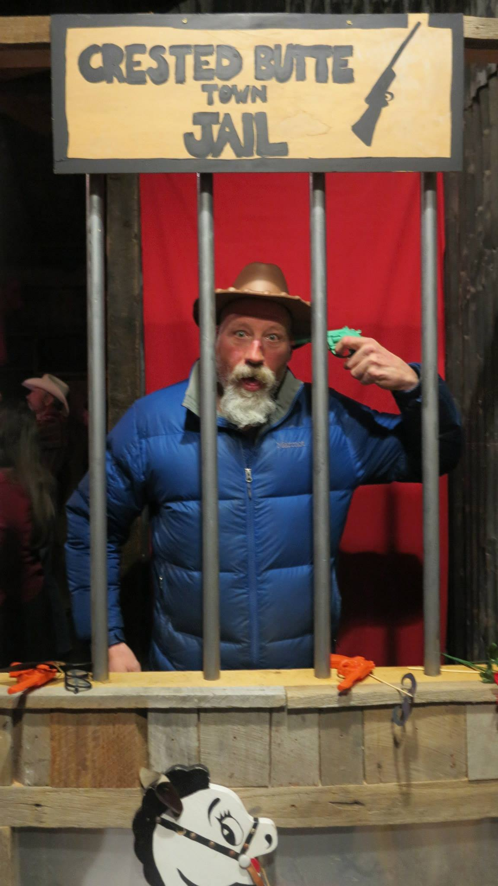

3,154
applicants
1,546
interviews
912
forwards
3,154
applicants
1,546
interviews
912
forwards
| job description | |
|---|---|
| position title | Ski Bum |
| location | Crested Butte, CO |
| employment | Full-Time ish |
| experience | I'd like you to have some |
| status | Open |
| description | Ski bumming is a way of life. It’s the pursuit of skiing and snowboarding as much as you possibly can while enjoying the ski town lifestyle. Ski bum jobs allow you to work hard, play hard, and ski harder |
| hiring lead |  Dead Head Ed |
| approved salary | $5,000 a season |